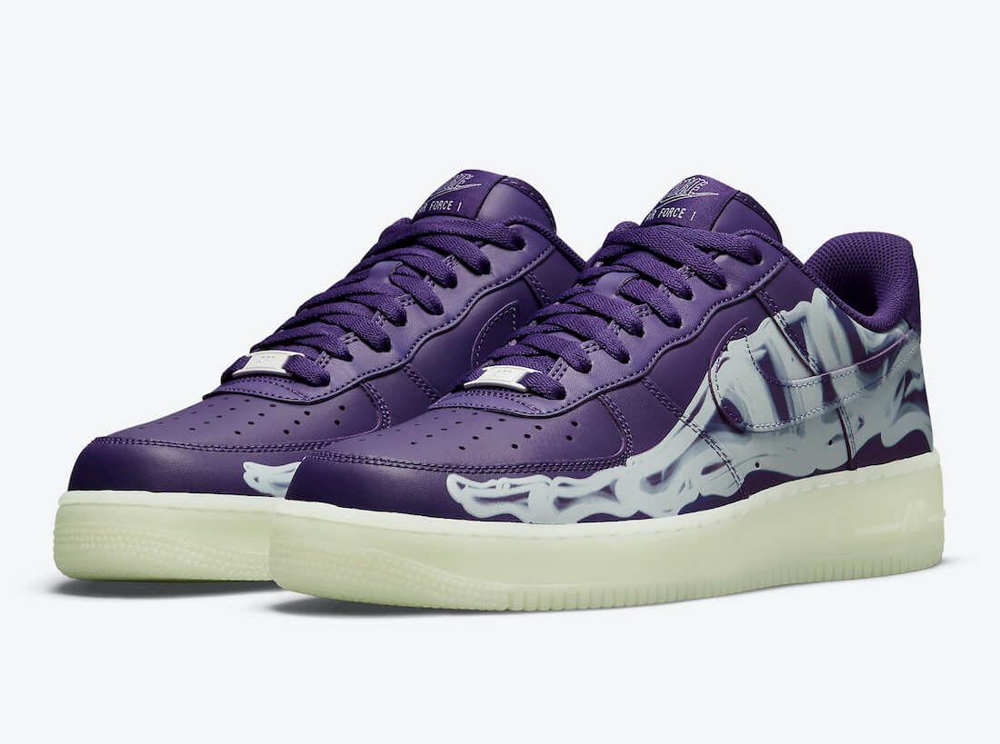
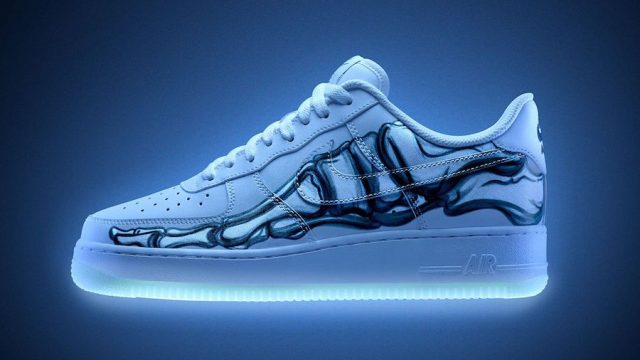
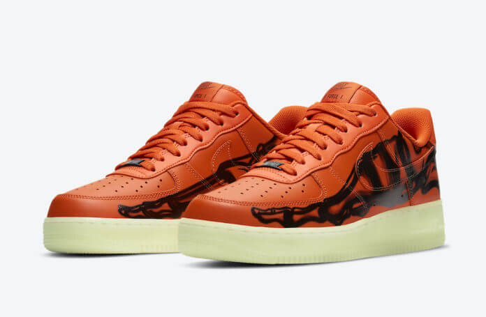

Es un par que tuvo su primer lanzamiento en Halloween, y cada año sale un color nuevo. Es uno de los pares mas esperados en la industria de los zapatos ya que solo salen en Halloween.
Halloween es una de las festividades más importantes de la industria de los sneakers por todos los lanzamientos especiales que preparan las marcas y como desde hace 4 años, Nike presenta el Air Force 1 Skeleton Halloween, ahora en color ¨Purple Skeleton¨.

Antes de este ¨Skeleton¨ hay tres colores, todos se destacan por tener el mismo print del pie y la suela glow que luce espectacular en la oscuridad.

